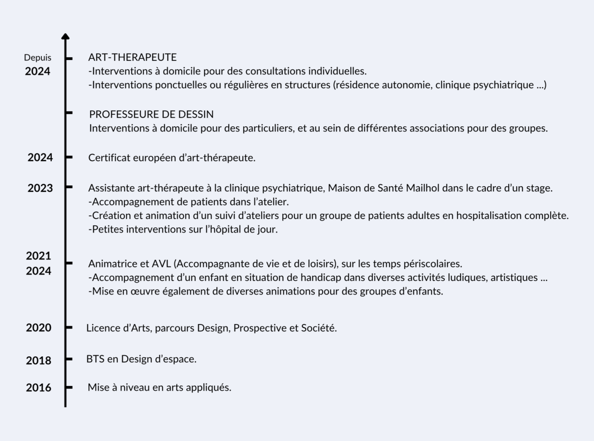

ZOÉ BERTRAND ART-THÉRAPEUTE
Ayant toujours eu une grande curiosité pour la psychologie et pour la compréhension du fonctionnement humain, s’est imposé à moi le besoin d’exploiter le côté thérapeutique de l’art en élaborant des protocoles pour aider et soulager à travers lui.
À ce jour, je suis pleinement convaincue du potentiel et du pouvoir transformateur que peut apporter l’art dans le processus de guérison.
Dans mes ateliers, on cherche avant tout à se libérer de ses tracas quotidiens, de son anxiété et de ses pensées négatives, en cherchant à vivre pleinement l’instant présent !

Elle offre une voie alternative lorsque les mots échappent et que les émotions sont difficiles à exprimer, permettant ainsi de communiquer des souffrances qui sont parfois trop complexes pour être verbalisées, tandis que l’inconscient joue un rôle majeur dans ce processus.
Cela peut prendre différentes formes, et les supports utilisés peuvent être nombreux : la peinture, le dessin, le modelage, l’écriture, la danse, la musique, et bien d’autres procédés encore.
L’art-thérapeute agit comme un guide pour vous aider à comprendre et à surmonter vos problèmes personnels le plus sereinement possible.
Tout d’abord, pour toute personne désireuse de venir pratiquer l’art-thérapie, puisqu’aucune compétence artistique n’est requise pour participer !
- Les enfants, les adolescents, les adultes, les personnes âgées … L'art-thérapie est une pratique qui s'adresse et s'adapte à tous les âges.
- Toute personne qui souhaite atteindre un état de mieux-être.
Que vous ressentiez une souffrance psychologique persistante,
traversiez une période difficile, ou aspiriez simplement à vous épanouir davantage en bénéficiant d’un soutien dans votre quête d’évolution personnelle.
Grâce à ses techniques variées, au travers des ateliers, dans un
espace sécurisé et créatif, l’art-thérapie peut aider, entre
autres, à :
- Relancer sa créativité
- Réduire l’angoisse, l’anxiété et le stress
- Apprivoiser ses peurs
- Favoriser la communication
- Gérer ses émotions
- Apprendre à lâcher prise
- Renforcer son estime de soi … Confiance en soi, affirmation de
soi, amour de soi
- Débloquer des conflits
- Soulager la souffrance
- Renouer le lien avec les autres
- Retrouver le plaisir
- Redonner du sens à sa vie
En mettant en couleurs et en formes vos pensées, vos émotions et
vos expériences, vous pourrez découvrir de nouveaux aspects de vous-même,
développer votre créativité et trouver des moyens uniques de vous
exprimer et de vous comprendre !
Les ateliers vous encouragent à vous explorer, afin de
remodeler progressivement la perception que vous avez de
vous-même. Cette démarche de découverte de soi se déroule à votre rythme,
avec pour objectif une transformation positive.
Séances en visio conférence ou à domicile.
Séance en cabinet sur Castanet-Tolosan, tous les vendredis à partir du 19 juillet.
À Toulouse et dans ses environs, en présentiel, ou en visio conférence, je propose des ateliers sur différents thèmes.
Je suis disponible à Toulouse et dans ses environs, m’adaptant à différents environnements et contextes pour intervenir dans des structures telles que les EHPAD, les maisons de retraite, les écoles, écoles spécialisées et centres éducatifs, les établissements de soins de santé mentale, les centres avec programme de réadaptation, etc.
N'hésitez pas à me faire part de votre demande et à me contacter pour toute information complémentaire, notamment concernant les tarifs et la durée des consultations, qui dépendent du cadre et de vos besoins spécifiques.
N’hésitez pas également à venir me poser toutes vos questions et interrogations.
J’y répondrai avec plaisir et avec toute l’attention nécessaire.
s’instaure avec soi-même, offrant
ainsi une alternative précieuse
à l’expression verbale.
Zoé BERTRAND, Art-thérapeute certifiée.
À Toulouse et dans ses environs, en présentiel, ou en visio conférence, je propose des ateliers sur différents thèmes.
Tous les renseignements sur ces ateliers seront mis à jour régulièrement ici.
Pas de date d’atelier collectif pour le moment.